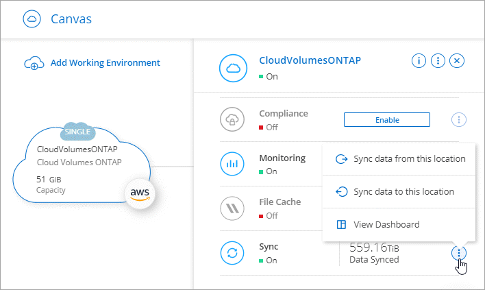
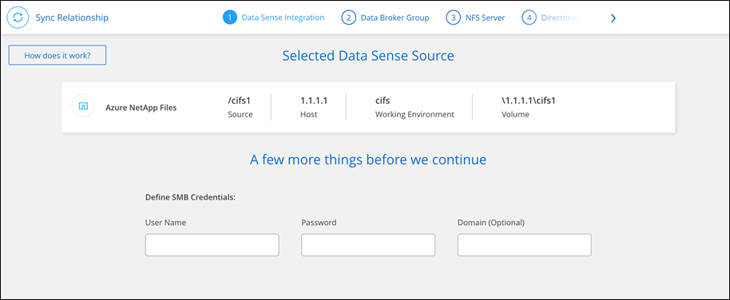

ドキュメントの変更をリクエスト
ドキュメントの変更をリクエスト GitHub で編集
GitHub で編集 寄稿者向けガイド
寄稿者向けガイド同期関係を作成する
同期関係を作成すると、 Cloud Sync サービスはソースからターゲットにファイルをコピーします。最初のコピーの後、変更されたデータは 24 時間ごとに同期されます。
一部のタイプの同期関係を作成する前に、 Cloud Manager で作業環境を作成する必要があります。
特定のタイプの作業環境の同期関係を作成します
次のいずれかの同期関係を作成する場合は、最初に作業環境を作成または検出する必要があります。
-
ONTAP 対応の Amazon FSX
-
Azure NetApp Files の特長
-
Cloud Volumes ONTAP
-
オンプレミスの ONTAP クラスタ
-
作業環境を作成または検出します。
-
「 * キャンバス * 」をクリックします。
-
上記のいずれかのタイプに一致する作業環境を選択してください。
-
[ 同期 ] の横のアクションメニューを選択します。

-
この場所から * データを同期 * または * この場所へのデータの同期 * を選択し、プロンプトに従って同期関係を設定します。
他のタイプの同期関係を作成します
ONTAP 、 Azure NetApp Files 、 Cloud Volumes ONTAP 、オンプレミスの ONTAP クラスタで、 Amazon FSX 以外のサポートされているストレージタイプとの間でデータを同期するには、次の手順を実行します。以下の手順は、 NFS サーバから S3 バケットへの同期関係を設定する方法の例を示しています。
-
Cloud Manager で、 * Sync * をクリックします。
-
[ 同期関係の定義 *] ページで、ソースとターゲットを選択します。
次の手順では、 NFS サーバから S3 バケットへの同期関係を作成する方法の例を示します。

-
NFS Server * ページで、 AWS と同期する NFS サーバの IP アドレスまたは完全修飾ドメイン名を入力します。
-
[Data Broker Group] ページで、プロンプトに従って AWS 、 Azure 、または Google Cloud Platform にデータブローカー仮想マシンを作成するか、データブローカーソフトウェアを既存の Linux ホストにインストールします。
詳細については、次のページを参照してください。
-
データブローカーをインストールしたら、 [* 続行 ] をクリックします。

-
[Directories ] ページで、最上位のディレクトリまたはサブディレクトリを選択します。
Cloud Sync がエクスポートを取得できない場合は、 * エクスポートを手動で追加 * をクリックし、 NFS エクスポートの名前を入力します。

NFS サーバ上の複数のディレクトリを同期する場合は、同期関係を作成してから同期関係を作成する必要があります。 -
「 * AWS S3 Bucket * 」ページで、バケットを選択します。
-
ドリルダウンして、バケット内の既存のフォルダを選択するか、バケット内に作成した新しいフォルダを選択します。
-
リストに追加 * をクリックして、 AWS アカウントに関連付けられていない S3 バケットを選択します。 "S3 バケットには特定の権限を適用する必要があります。"。
-
-
[* Bucket Setup* ] ページで、バケットを設定します。
-
S3 バケットの暗号化を有効にするかどうかを選択し、 AWS KMS キーの ARN を入力するか、 AES-256 暗号化を選択します。
-
S3 ストレージクラスを選択します。 "サポートされているストレージクラスを表示します。"。

-
-
* ページで、ソースファイルとフォルダーを同期してターゲットの場所に保持する方法を定義します。
- スケジュール
-
以降の同期に対して繰り返し実行するスケジュールを選択するか、同期スケジュールをオフにします。データを 1 分ごとに同期するように関係をスケジュールできます。
- 同期タイムアウト
-
指定した時間数または日数以内に同期が完了しなかった場合に、Cloud Sync がデータの同期をキャンセルするかどうかを定義します。
- 通知
-
Cloud Managerの通知センターでCloud Sync 通知を受信するかどうかを選択できます。データの同期が成功した場合、データの同期が失敗した場合、データの同期がキャンセルされた場合の通知を有効にできます。
- 再試行
-
ファイルをスキップする前に Cloud Sync がファイルの同期を再試行する回数を定義します。
- 継続的同期
-
初期データ同期が完了すると、Cloud Sync はソースS3バケットで変更をリスンし、ターゲットへの変更が発生した場合はその変更を継続的に同期します。ソースを定期的に再スキャンする必要はありません。
この設定は、同期関係を作成する場合、およびS3バケットからS3、Google Cloud Storage、Azure BLOBストレージ、StorageGRID 、またはIBMストレージに同期する場合にのみ使用できます。
この設定を有効にすると、他の機能に次のように影響します。
-
同期スケジュールが無効になっています。
-
次の設定がデフォルト値に戻ります。同期タイムアウト、最近変更されたファイル、更新日。
-
サイズでフィルタは、コピーイベントに対してのみアクティブになります（削除イベントに対してはアクティブになりません）。
-
関係を作成したあとは、関係を高速化または削除する必要があります。同期の中止、設定の変更、レポートの表示はできません。
-
- で比較してください
-
ファイルまたはディレクトリが変更され、再度同期する必要があるかどうかを判断するときに、 Cloud Sync で特定の属性を比較するかどうかを選択します。
これらの属性をオフにしても、 Cloud Sync はパス、ファイルサイズ、およびファイル名をチェックしてソースとターゲットを比較します。変更がある場合は、それらのファイルとディレクトリが同期されます。
Cloud Sync では、次の属性の比較を有効または無効にすることができます。
-
mtime: ファイルの最終変更時刻。この属性はディレクトリに対しては無効です。
-
uid 、 gid * 、および * mode ： Linux の権限フラグ。
-
- オブジェクトのコピー
-
オブジェクトストレージのメタデータとタグをコピーする場合は、このオプションを有効にします。ユーザがソース上のメタデータを変更すると、 Cloud Sync は次の同期でこのオブジェクトをコピーしますが、ユーザがソース上のタグを変更した場合（データ自体は変更した場合を除く）、 Cloud Sync は次回の同期でそのオブジェクトをコピーしません。
関係の作成後にこのオプションを編集することはできません。
ターゲットにAzure BlobまたはS3互換エンドポイント（S3、StorageGRID 、IBM Cloud Object Storage）を含む同期関係では、タグのコピーがサポートされます。
メタデータのコピーは、次のいずれかのエンドポイント間の「クラウド間」関係でサポートされます。
-
AWS S3
-
Azure Blob の略
-
Google クラウドストレージ
-
IBM クラウドオブジェクトストレージ
-
StorageGRID
-
- 最近変更されたファイル
-
スケジュールされた同期よりも前に最近変更されたファイルを除外するように選択します。
- ソース上のファイルを削除します
-
Cloud Sync によってファイルがターゲットの場所にコピーされた後、ソースの場所からファイルを削除することを選択します。このオプションには、コピー後にソースファイルが削除されるため、データ損失のリスクも含まれます。
このオプションを有効にする場合は、データブローカーで local.json ファイルのパラメータも変更する必要があります。ファイルを開き、次のように更新します。
{ "workers":{ "transferrer":{ "delete-on-source": true } } } - ターゲット上のファイルを削除します
-
ソースからファイルが削除された場合は、ターゲットの場所からファイルを削除することを選択します。デフォルトでは、ターゲットの場所からファイルが削除されることはありません。
- ファイルの種類
-
各同期に含めるファイルタイプ（ファイル、ディレクトリ、シンボリックリンク）を定義します。
- ファイル拡張子を除外します
-
ファイル拡張子を入力し、 * Enter * キーを押して、同期から除外するファイル拡張子を指定します。たとえば、「 LOG_OR.log_ 」と入力すると、 *.log ファイルが除外されます。複数の拡張子に区切り文字は必要ありません。次のビデオでは、簡単なデモを紹介しています。
- ファイルサイズ
-
サイズに関係なくすべてのファイルを同期するか、特定のサイズ範囲のファイルのみを同期するかを選択します。
- 変更日
-
最後に変更した日付、特定の日付以降に変更されたファイル、特定の日付より前、または期間に関係なく、すべてのファイルを選択します。
- 作成日
-
SMB サーバがソースの場合、この設定を使用すると、指定した日付の前、特定の日付の前、または特定の期間の間に作成されたファイルを同期できます。
- [ACL] - アクセスコントロールリスト
-
関係の作成時または関係の作成後に設定を有効にして、 SMB サーバから ACL をコピーします。
-
* Tags/Metadata* ページで、 S3 バケットに転送されたすべてのファイルにキーと値のペアをタグとして保存するか、すべてのファイルにメタデータのキーと値のペアを割り当てるかを選択します。


この機能は、 StorageGRID と IBM Cloud Object Storage にデータを同期する場合にも使用できます。Azure と Google Cloud Storage では、メタデータオプションのみを使用できます。 -
同期関係の詳細を確認し、 * 関係の作成 * をクリックします。
-
結果 *
-
クラウドの同期は、ソースとターゲットの間でデータの同期を開始します。
Cloud Data Sense から同期関係を作成
Cloud Sync はクラウドデータセンスと統合されています。データセンス内から、 Cloud Sync を使用してターゲットの場所と同期するソースファイルを選択できます。
Cloud Data Sense からデータ同期を開始すると、すべてのソース情報が 1 つの手順で表示されるため、重要な情報をいくつか入力するだけで済みます。その後、新しい同期関係の作成先を選択します。
